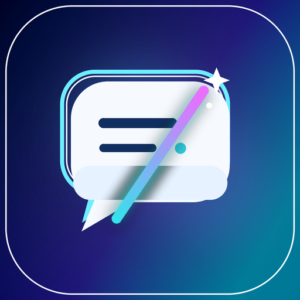

PDF 原文译文对照
原版左右对照、段落配对或沉浸原位阅读，尽可能保留页面比例和图表位置。支持连续阅读、停止与继续、双语 TXT 导出。

QudadFlow Translator面向 Microsoft Edge 与 Google Chrome
PDF 对照翻译、正文与图表联合问答、图表精读及 Python/R 绘图学习。把文献阅读、方法讨论、证据整理与图表表达放在同一个研究工作台。
深度研究使用兼容的 AI 模型；基础翻译无需 Key
扩展操作界面为简体中文，产品名称统一为英文
原版左右对照、段落配对或沉浸原位阅读，尽可能保留页面比例和图表位置。支持连续阅读、停止与继续、双语 TXT 导出。
把正文、图注与所选图表放在一起，讨论研究设计、方法与统计、结果和局限。通过 Skill 模板、多轮问答和 Markdown 导出整理阅读过程。
在解析浮窗并排看原图与解读、Python、R，学习图层、坐标、字体和图例。复制绘图草稿，本地试跑后导入结果请求视觉修订。
版本 0.9.6 · 网页阅读优化
原作者名单保留行布局、链接、单位上标及 ORCID 控件，在名单下方统一显示自然换行的译文；单位与作者贡献正文单独翻译。沉浸阅读同时优化动态段落、裁切卡片和混合语言，保护代码、公式及固定导航。翻译完成后状态浮窗收为可展开的小条。
版本 0.9.5 · 论文研究工作流
提取论文图表、批量载入可用高清原图，在独立浮窗中结合正文学习坐标、单位、分组、多面板、图例及不确定性。原生表格可复制 Markdown/TSV，图片表格转写需主动调用视觉 AI 并核对。
将视觉分析转成共享规格或自定义 Python/R 代码。代码框支持行号、复制、下载、换行和放大；通用模板用明确标记的 --style-demo 演示值在本地试跑，导出 PNG/PDF/SVG。导入试运行图后主动发起原图对照修订，聚焦形式、字体、配色、图例、标注与布局，不要求数值还原。扩展不执行代码或安装依赖。
版本 0.9.2
默认先尝试浏览器本地 Translator 模型，不可用时回退到 MyMemory。浏览器支持时可在设置中主动下载本地模型；MyMemory 会收到主动请求的文字，受服务商额度及保留条款限制。长段落按小片段限定并发处理，同时保留原文顺序；链接附近和竖排文字的译文位置更准确。实际速度、排版因页面与服务商而异。
符合资格的用户可主动选择官方 Sign in with ChatGPT。Windows x64 用户须从 v0.9.2 GitHub Release 按需下载连接程序。只有选择 ChatGPT 且连接程序缺失时才显示引导；可选下载权限仅监测本次文件。下载后须打开文件并确认安装一次，返回设置页自动检测并继续授权；已有兼容版本直接复用。浏览器不能代为运行下载程序，安装器尚未签名。本机程序保护 OAuth 凭据，并调用 OpenAI 官方 Responses API。官方开源接入目前只明确列出符合资格的 Plus／Pro，Business／Team 经此方式的资格尚未确认。默认机器翻译无需连接程序或登录。安装与限制 →
版本 0.8.16
网页论文与 PDF／Word／TXT／Markdown 工作台均可展开独立视图。图表预览加大，搜索、全选及批量操作集中在上方；提问和回答分栏，窄屏自动堆叠。按 Esc 返回阅读，保留所选图表、草稿、结果和进行中的分析。AI 候选核对提供大预览与原页入口。
在设置 → 翻译偏好中选择沉浸式译文颜色，提供浅色和深色预览。快捷键默认 Shift+A，可手动输入组合并保存，或点击录制；支持恢复与停用。只在已授权网页正文触发，输入框和编辑器保留正常输入。偏好独立于 API 方案，修改无需重新翻译。
沉浸式翻译按当前视区安排队列，随滚动、展开和动态变化补充，可信识别为目标语言的文字自动跳过。按站点启用划词按钮后，选中再点击翻译，单纯划选不会请求接口。浏览器内部页和内置 PDF 视图使用扩展的独立入口。
打开 PDF、Word DOCX、TXT、Markdown 本地文件或已授权链接，可选沉浸原位、原版左右对照、段落对照。PDF 保持页面比例与图表位置；无法容纳的长译文提供完整译文入口。PDF 可切换逐页／连续阅读；支持当前页/全文翻译、停止/继续和双语 TXT 导出。
文件最大 25 MB，PDF/渲染后的 Word 保留 300 页资源限制。提取正文和 TXT/Markdown 不设固定字数截断，仍受模型上下文、请求大小与浏览器内存限制。Word 呈现可能不同于 Microsoft Word；扫描正文替换需外部 OCR，暂不导出保持版式的译后 PDF/DOCX。
网页使用可移动、缩放的独立论文问答窗，文档共享研究流程。依据编号、图注和结构识别图、图片表格、原生及 ARIA 表格；支持一键全选、搜索、批量载入可用高清原图，再结合正文提问。文字表格可本地复制 Markdown/TSV，图片表格需主动调用视觉 AI 转录并核对；PDF 可按本页／全文提取，结合图注和绘图坐标；总览内的 AI 补充识别需核对候选后加入，普通与 AI 结果共享表格／裁剪去重。漏提取时可导入／粘贴或手动框选。
提取、选择和载入本身不调用 AI。可选 AI 解读图表、生成 Python/R 复现草稿，扩展不执行代码。支持可编辑 Skill 提示模板、默认关闭且可导出的跨页面笔记本记忆。识别为启发式，不能保证所有网站；论文单次问答最多结合 4 张原图，捕获及图片载入保留资源上限。
支持 Google、DeepL、Microsoft、OpenAI 兼容和自定义 JSON 接口，最多保存 20 个本地 API 方案。设置分区可独立收缩。API 只在设置中新增和切换；所有阅读页读取／刷新当前上游模型，使用仅含 ID 的列表切换共用模型。设置支持草稿测试，模型名称不能证明能力。MyMemory 是有限免 Key 基础试用，匿名通常约 5,000 字符/天，可能保留提交文字，不是不限量服务。
翻译、模型读取、连接测试和 AI 分析不设扩展固定超时，遇真实 HTTP/网络/流错误或手动停止时结束；服务商限制仍适用，文档/图片下载保留资源保护。网站/API 按需授权，也可主动一次授权所有网站以减少提示。
0.8.16 通过 87 项行为检查及打包／语法验证，覆盖展开布局与状态保留、PDF 候选核对、网页分析及补充识别，使用隔离 Edge、生成论文和模拟接口。此前 0.8.15 通过 121 项检查，包含 110 项行为验证及 11 项构建／打包检查，使用生成文档、已保存样例与虚构本地接口。出版商实时下载可用性、真实模型速度和准确率及本轮 Chrome 集成尚未验证；纯模型 ID 后续改动再次通过同组 27 项验证，不重复累计；以前 PDF 及完整检查单独保留。文件本地解析，仅主动请求的文字或所选图片发送到配置的服务商，没有开发者翻译代理、广告或分析追踪。
交流与支持
交流使用体验、反馈问题与功能建议。
QudadFlow Translator 为独立扩展，与所列服务商无隶属关系。第三方账号、费用与隐私规则由服务商决定。GitHub 发布与商店审核状态分别记录，见0.9.6 发布记录。